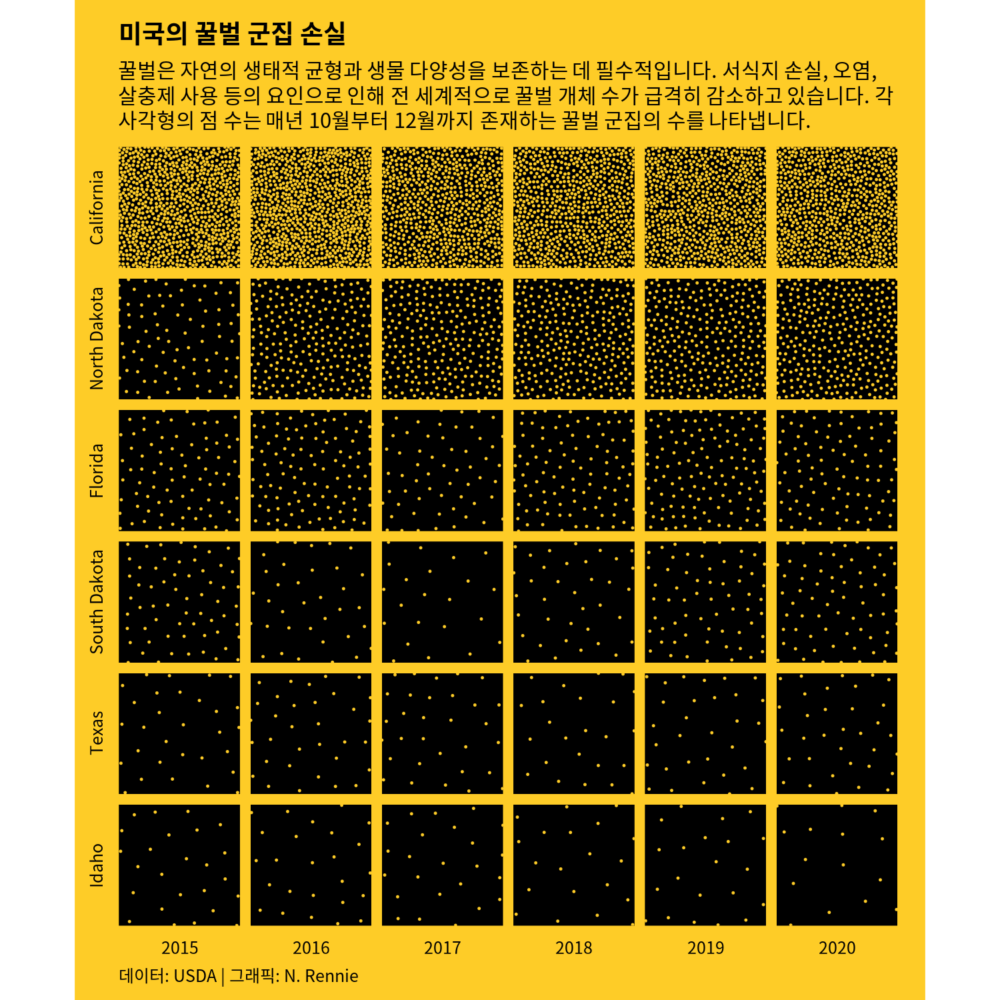

4 꿀벌 군집 손실:푸아송 디스크 샘플링으로 수량 시각화
이 장에서는 누락된 데이터의 패턴을 탐색하고, CRAN에서 사용할 수 없는 R 패키지를 설치하고, 푸아송 디스크 샘플링을 수행하는 방법을 알아보고, 두 변수로 패면 분류된 플롯을 만드는 방법을 배웁니다.
이 장을 마치면 다음을 할 수 있습니다:
- 누락된 데이터를 시각화하여 패턴을 식별합니다;
-
remotes패키지를 사용하여 비-CRAN 패키지를 설치합니다; -
ggforce패키지를 사용하여 원 채우기(circle packing)를 수행합니다; - 두 가지 다른 범주형 변수로 패면 분류(facetting)를 사용합니다.
이 장에 필요한 패키지들을 로드하는 것으로 시작해 보겠습니다.
이 장에서는 두 개의 새로운 패키지도 사용합니다:
-
naniar: 데이터 프레임의 결측값을 탐색하고 시각화합니다. -
ggforce: 유용한 지오메트리, 통계 변환, 스케일 등을 추가하여ggplot2를 확장합니다.
4.1 데이터
주요 수분 매개자로서의 꿀벌은 우리 지구 생태계의 매우 중요한 부분입니다. 그러나 서식지 손실, 살충제 사용 및 질병과 같은 요인으로 인해 꿀벌의 수가 감소하고 있습니다 (Brown, Mark J.F. and Paxton, Robert J. 2009). 미국 농무부(USDA)는 매년 꿀벌 군집에 대한 데이터를 발표하는데, 여기에는 군집 수, 군집 크기, 군집 손실 또는 추가 비율, 군집 건강 스트레스 요인으로 확인된 요소에 대한 정보가 포함됩니다 (United States Department of Agriculture: Economics, Statistics and Market Information System 2022).
USDA 꿀벌 군집 데이터는 2022년 1월 TidyTuesday (R4DS Online Learning Community 2023) 데이터 세트로 사용되었으며 (Georgios Karamanis의 제안 이후), tidytuesdayR 패키지를 사용하여 로드할 수 있습니다:
tuesdata <- tt_load("2022-01-11")
colony <- tuesdata$colony
stressor <- tuesdata$stressor이 데이터 버전은 2021년 릴리스를 기반으로 하므로 2021년 6월까지의 데이터가 포함됩니다. 최신 데이터로 작업하려면 usda.library.cornell.edu/concern/publications/rn301137d에서 얻을 수 있습니다.
두 가지 다른 데이터 세트가 포함되어 있습니다. 첫 번째인 colony에는 2015년 이후 각 미국 주별 꿀벌 군집 수와 크기에 대한 정보가 포함되어 있습니다. 두 번째인 stressor에는 꿀벌 군집에 대한 다양한 건강 스트레스 원인과 이러한 스트레스 요인에 의해 영향을 받는 군집 비율에 대한 정보가 포함되어 있으며, 역시 주 및 기간별로 나뉩니다.
4.2 탐색 작업
이 장에서는 colony 데이터에 초점을 맞추어 꿀벌 군집 수가 시간이 지남에 따라 어떻게 변하는지 그림을 그려보겠습니다.
4.2.1 데이터 탐색
기본 R의 boxplot() 함수를 사용하여 꿀벌 군집 수(colony_n)가 시간이 지남에 따라 어떻게 변하는지에 대한 간단한 상자 그림을 살펴보는 것으로 시작하겠습니다:
boxplot(
colony_n ~ year,
data = colony,
horizontal = TRUE,
xlab = "꿀벌 군집 수",
ylab = NULL
)Figure 4.1 은 사실 많은 정보를 제공하지는 않습니다. 군집 수의 분포가 매우 치우쳐 있고 꽤 많은 높은 값이 이상치로 분류되고 있다는 점을 시사할 뿐입니다. 이러한 이상치들로 인해 상자 그림의 주요 부분이 플롯의 왼쪽으로 찌그러져 있어 매년 평균적으로 얼마나 변하는지 알기 어렵습니다. 이것은 상자 그림의 더 일반적인 문제이기도 합니다. Anscombe’s quartet (Anscombe 1973)은 아마도 요약 통계의 불충분함을 보여주는 가장 유명한 예일 것입니다. 상자 그림은 본질적으로 변장한 요약 통계일 뿐입니다. 동일한 상자 그림을 가진 다른 데이터가 실제로는 매우 다른 분포에서 나올 수 있습니다 (Matejka and Fitzmaurice 2017).
이러한 이상치의 원인을 이해하는 것부터 시작해 보겠습니다. 실제 값일까요? 데이터의 오류일까요? 아니면 데이터에 대해 잘못된 가정을 했을까요? 이를 더 잘 이해하기 위해 2020년 한 해를 확대하여 각 주의 군집 수를 살펴보고 가장 큰 이상치가 어떤 주와 관련이 있는지 이해해 보겠습니다.
군집 수가 훨씬 더 많은 몇 개의 주(캘리포니아, 플로리다, 노스다코타)가 있지만 주요 문제는 주(state) 중 하나가 미국 전체, 즉 다른 모든 값의 합계라는 것입니다. 또한 Figure 4.2 에서 모든 주가 개별적으로 포함되는 것은 아니라는 것을 알 수 있습니다. 일부 주(아마도 지역)를 그룹화한 "Other States" 범주가 대신 포함되어 있습니다.
불행히도 열 이름이 한 가지(예: 각 값은 주와 관련됨)를 암시하지만 해당 열에 실제로 다른 값(예: 국가)도 포함되는 것은 드문 일이 아닙니다. 열 이름을 지정할 때(특히 다른 사람과 공유할 데이터의 경우) 혼란을 피하기 위해 적절한 열 이름을 선택하십시오. 예를 들어 여기서는 region이 더 적절한 열 이름일 것입니다.
상자 그림이 알려주지 않는 데이터의 또 다른 측면은 결측값입니다. 상자 그림은 있는 것만 플롯하고 없는 것은 플롯하지 않습니다. 기본 R 그래픽은 ggplot2 (Wickham 2016)가 하는 방식으로 NA 값에 대해 경고하지 않기 때문에 이 단계를 기억하는 것이 특히 중요합니다. 그렇다면 존재하지 않는 데이터는 어떻게 플롯할까요?
visdat 패키지 (Tierney 2017)는 데이터를 빠르게 살펴보는 훌륭한 방법입니다. 이름에서 알 수 있듯이 어떤 값이 누락되었는지 빠르게 시각화할 수 있는 vis_miss() 함수가 포함되어 있습니다. 압도적으로 큰 플롯을 만드는 것을 피하기 위해 한 주의 데이터만 시각화하는 것으로 시작하겠습니다. 기본 R의 subset() 함수를 사용하여 앨라배마주에 대한 데이터만 얻을 수 있습니다.
Figure 4.3 의 vis_miss()로 생성된 플롯의 열 이름이 회전되어 가장 오른쪽 열 이름이 차트 영역 가장자리를 벗어나는 것을 알 수 있습니다. 이 문제를 해결하는 데 도움이 되는 두 가지 솔루션이 있습니다:
- 열 이름을 축약하여 사용 가능한 공간을 초과할 가능성을 줄이는
visdat의abbreviate_vars()함수를 사용하십시오. -
vis_miss()의 플롯 출력이ggplot2로 만들어졌다는 사실을 활용하십시오. 즉,theme()함수를 사용하여 플롯의 오른쪽 여백에 사용할 수 있는 공간을 확장할 수 있습니다.
colony_AL |>
abbreviate_vars(min_length = 8) |>
vis_miss() +
theme(plot.margin = margin(r = 25))Figure 4.4 에서 행은 시간 순서대로 정렬되어 있으며 특별한 패턴이 나타나지 않는 것을 볼 수 있습니다. colony_reno_pct 열에 결측 데이터가 가장 많고 모든 데이터(시간 및 주 제외)가 누락된 짧은 기간이 있습니다. 다른 주에 대해 이 시각화를 다시 생성하면 유사한 패턴을 볼 수 있습니다.
2019년 4월-6월 기간 동안 모든 주에 대한 데이터를 사용할 수 없습니다. 이는 데이터가 단순히 무작위로 누락된 것이 아니라 이 기간 동안 지속적인 데이터 수집 문제가 있었음을 시사합니다. Figure 4.4 에서는 볼 수 없지만 데이터의 마지막 연도 말에 대한 데이터도 (암묵적으로) 누락되었습니다. 이는 데이터가 보고되는 시기(연간 데이터 릴리스는 8월에 발생함) 때문입니다. 즉, 모든 연도에 대해 데이터가 완전하지 않으므로 연간 평균을 구할 때 주의해야 합니다.
이 장에서는 데이터의 결측값을 모델링, 대치 또는 제거하는 방법에 대해서는 다루지 않을 것입니다. 그 자체로 매우 큰 주제이기 때문입니다. 그러나 결측값을 명시적으로 다루든 그렇지 않든 결측값이 있는지 확인하고, 데이터 수집 프로세스의 어떤 측면이 이를 유발했을 수 있는지 고려하고, 이것이 도출할 수 있는 결론에 미치는 영향을 고려하는 것이 중요합니다.
대신 완전한 데이터가 있는 분기로 시각화를 제한하겠습니다. 예를 들어 "October-December" 기간의 연간 추세만 살펴보는 것입니다. 하지만 이 접근 방식은 여전히 한계가 있습니다. 데이터는 분기별로 기록되므로 "January-March", "April-June", "July-September" 또는 "October-December" 중에서 선택할 수 있는 네 가지 옵션이 있습니다. 여기서는 "October-December"에 대한 데이터에 초점을 맞출 것입니다. 이 선택의 이유는 이 기간이 꿀벌 군집의 계절적 주기의 시작으로 간주되며 “이 시기의 군집 상태가 다음 해의 번영에 큰 영향을 미치기” 때문입니다 (Mid-Atlantic Apiculture Research and Extension Consortium 2024).
기본적으로 visdat 패키지는 누락된 데이터가 NA로 인코딩되어 있다고 가정합니다. 항상 그런 것은 아닙니다. 특히 직접 받기 전에 다른 소프트웨어로 처리된 데이터로 작업할 때 더욱 그렇습니다. 결측값이 "", " ", 99, 999, - 또는 0과 같은 값을 사용하여 인코딩되는 것은 드문 일이 아닙니다. naniar 패키지 (Tierney and Cook 2023)는 결측값을 요약하고 처리하는 데 매우 유용합니다. naniar의 replace_with_na() 함수는 R에서 데이터를 더 쉽게 처리할 수 있도록 비정상적인 결측값 인코딩을 NA로 바꾸는 데 도움이 될 수 있습니다.
결측값을 시각화할 때 열과 행의 순서를 생각하는 것도 중요합니다. 예를 들어 날짜가 있는 열이 있는 경우 결측 데이터를 시각화하기 전에 날짜별로 행을 정렬하면 결측의 시간적 패턴을 식별할 수 있습니다. 행이 다른 방식으로 정렬된 경우 이 패턴을 놓칠 수 있습니다.
4.2.2 탐색적 스케치
각 주에 대해 매년 평균 군집 수를 시각화해 보겠습니다. 선형 차트나 영역 차트와 같이 분명한 첫 번째 선택 목록이 있습니다. 간단한 막대 차트도 여기에서 효과적일 수 있습니다. 하지만 시각화 선택에 있어 조금 더 창의적이고 예술적이어야 합니다. 두 변수(주 및 연도)의 각 조합에서 사물(꿀벌 군집)의 수를 나타낼 수 있는 방법은 많습니다. 주와 연도의 모든 조합에 사용할 수 있는 데이터가 있으므로 Figure 4.5 와 같이 주와 연도의 그리드를 만들어 보겠습니다.
이제 각 그리드 사각형에서 단순히 사물의 수를 보여주려고 합니다. 어떻게 할 수 있을까요? 원을 그리고 원의 크기로 사물의 수를 보여줄 수 있습니다. 또는 각 사각형에 색을 칠하고 색의 강도로 사물의 수를 보여줄 수 있습니다. 또는 Figure 4.6 에서처럼 많은 점을 그리고 점의 수로 사물의 수를 보여줄 수 있습니다. 이러한 유형의 차트는 점 밀도 플롯(dot density plot)이라고 할 수 있으며 지리 데이터에 일반적으로 사용됩니다.
또한 특정 지역의 주에 초점을 맞추거나 우리가 가장 관심 있는 단순한 주들만 시각화하도록 선택할 수도 있습니다.
4.3 플롯 준비
이 플롯을 생생하게 표현하려면 몇 가지 작업을 완료해야 합니다:
- 각 주별, 연도별 평균 군집 수를 계산합니다.
- 군집 수를 나타낼 점에 대한 x 및 y 좌표를 시뮬레이션합니다.
- 점을 플롯합니다.
이것은 (때로는 복잡한) 준비가 많이 필요하지만 플로팅 자체는 비교적 간단한 차트 유형입니다.
4.3.1 데이터 랭글링
시각화할 주(states)의 하위 집합을 선택하는 것으로 시작하겠습니다:
states_to_plot <- c(
"California", "North Dakota", "Florida",
"Texas", "Idaho", "South Dakota"
)그런 다음 dplyr의 filter() 함수를 사용하여 데이터를 부분 집합화하여 이러한 주에 대한 행과 선택한 기간인 "October-December"만 포함합니다. 또한 select() 함수를 사용하여 연도, 주, 군집 수와 같이 플롯에 실제로 필요한 열만 유지합니다:
기본적으로 주는 알파벳 순서로 정렬됩니다. 패턴을 더 쉽게 전달하기 위해 데이터의 마지막 연도(2020)에 있는 군집 수를 기준으로 주를 정렬합니다. 먼저 데이터를 2020년으로 필터링하고 colony_n 열을 기준으로 내림차순( dplyr의 desc() 사용)으로 데이터를 정렬한 다음 pull()을 사용하여 주 열을 추출하여 해당 순서를 결정합니다.
나중에 주 열을 팩터로 변환할 것이며, 이 state_levels 벡터는 팩터 레벨을 제공할 것입니다.
이제 Figure 4.6 에서 스케치한 대로 각 그리드 사각형에서 꿀벌 군집 수를 나타낼 점을 생성해야 합니다. 균일 분포에서 x 및 y 좌표를 생성하는 runif() 함수를 사용하는 것과 같은 간단한 작업을 수행할 수 있습니다. 그러나 이 접근 방식은 약간 지저분해 보이는 플롯으로 이어질 가능성이 큽니다. 무작위성은 일반적으로 매우 좋아 보이지 않으며 많은 점이 겹쳐질 가능성이 큽니다. 대신 우리는 겹치지 않고 최소한 어느 정도 거리가 있는 점을 생성하고 싶습니다. 이를 위해 푸아송 디스크 샘플링(Poisson disk sampling)을 사용할 것입니다.
4.3.2 poissoned를 사용한 푸아송 디스크 샘플링
푸아송 디스크 샘플링은 점들이 대부분 무작위이지만 꽤 고르게 분포되는 패턴 유형인 블루 노이즈(blue noise)를 생성하는 한 가지 방법입니다. 푸아송 디스크 샘플링에서 모든 점은 적어도 \(r\) 거리만큼 떨어져 있어야 합니다. 즉, 각 점 주위에 반경 \(r\)의 디스크를 그리면 디스크에 다른 점이 포함되지 않습니다.
푸아송 디스크 샘플링에는 여러 가지 접근 방식이 있습니다. 데이터를 생성하는 순진한(매우 느린) 방법은 데이터 포인트를 샘플링하는 것입니다. 두 번째 데이터 포인트를 샘플링합니다. 기존 데이터 포인트의 \(r\) 내에 있으면 버립니다. 그렇지 않으면 받아들여 데이터에 추가합니다. 반복합니다. 다행히도 계산적으로 더 효율적인 다른 접근 방식이 있으며, R에서 poissoned 패키지 (mikefc 2024)는 Bridson (2007) 에 설명된 접근 방식을 구현합니다. 이 패키지를 사용하면 2차원 또는 3차원으로 샘플을 생성할 수 있습니다(여기서는 2차원을 고수하겠습니다!).
remotes 사용하기
이 장을 처음 작성했을 때 poissoned 패키지는 CRAN에서 사용할 수 없었으므로 GitHub에서 대신 설치해야 했습니다. remotes 패키지 (Csárdi et al. 2024)를 사용하여 GitHub 또는 GitLab과 같은 원격 저장소에서 패키지를 설치할 수 있습니다. "user/repository" 형식의 문자열을 전달하여 install_github() 함수를 사용할 수 있습니다:
library(remotes)
install_github("coolbutuseless/poissoned")pak 사용하기
remotes의 대안은 pak 패키지 (Csárdi and Hester 2024)입니다. 사실 이것은 CRAN, Bioconductor, GitHub, URL, git 저장소 또는 로컬 디렉토리에서 R 패키지를 설치하는 또 다른 방법입니다. pak을 사용하여 GitHub에서 패키지를 설치하려면 pkg_install() 함수를 사용하고 다시 "user/repository" 문자열을 전달하십시오:
library(pak)
pkg_install("coolbutuseless/poissoned")동일한 함수를 사용하여 CRAN에서 패키지를 설치할 수도 있습니다(예: pkg_install("ggplot2")).
각 그리드 사각형에 나타날 점의 x 및 y 좌표를 생성해야 합니다. 이를 위해 poissoned의 poisson2d() 함수를 사용할 것입니다. 두 좌표(x 및 y)를 저장하고 좌표 쌍의 수가 각 그리드 사각형마다 다르므로 출력을 리스트 열에 저장할 것입니다. dplyr의 mutate() 함수를 사용하여 다른 새 열을 추가하는 것과 같은 방식으로 리스트 열을 추가할 수 있습니다. 데이터의 각 행에 있는 state, year 및 colony_n 값에 따라 샘플을 생성하려고 하므로 dplyr의 rowwise() 함수를 사용합니다. 무작위 데이터를 생성하므로 코드를 실행할 때마다 동일한 플롯을 얻을 수 있도록 set.seed()를 사용하여 랜덤 시드를 설정해야 합니다.
군집 수가 더 많은 곳은 더 밀집되어 더 많은 점을 포함하기를 원합니다. 즉, 군집 수가 더 많을 때 점 사이의 최소 반경이 더 작아야 합니다. 즉, r과 colony_n 사이에는 역의 관계가 있습니다. poisson2d()의 기본 그리드는 두 축 모두에서 0에서 10까지입니다. colony_n의 값 범위는 94000에서 770000까지이므로 최소 반경을 단순히 1/colony_n로 설정하면 점이 0.000001298701만큼만 떨어져 있게 됩니다. 너무 작습니다! 상수 인수를 곱하여 이 거리를 늘릴 수 있습니다. 몇 번의 시행착오 끝에 r을 200000/colony_n으로 설정했습니다.
푸아송 디스크 샘플링과 균일 샘플링의 차이를 확인하기 위해 일부 데이터를 시뮬레이션하고 플롯할 수 있습니다:
Figure 4.7 에서 푸아송 디스크 샘플링의 점 위치가 실제로는 완전히 무작위가 아니며 모양이 훨씬 더 좋다는 것을 알 수 있습니다.
bees_grid 데이터로 돌아가서 tidyr의 unnest()를 사용하여 pts 리스트 열을 별도의 행과 열로 확장하고 state 열이 앞서 정의한 state_levels 변수에 의해 정렬된 팩터인지 확인합니다.
이것은 다음과 같은 형태의 데이터 세트를 생성합니다:
bees_plot_data# A tibble: 7,483 × 5
year state colony_n x y
<dbl> <fct> <dbl> <dbl> <dbl>
1 2015 California 750000 5.05 5.15
2 2015 California 750000 5.44 4.80
3 2015 California 750000 4.55 5.06
4 2015 California 750000 5.17 4.66
5 2015 California 750000 5.53 4.37
6 2015 California 750000 5.06 4.25
7 2015 California 750000 4.84 4.86
8 2015 California 750000 5.66 5.07
9 2015 California 750000 4.85 4.54
10 2015 California 750000 5.37 5.29
# ℹ 7,473 more rows4.3.3 첫 번째 플롯
이전의 모든 장에서 했던 것처럼 ggplot() 함수를 사용하여 플롯을 시작하고 플롯의 모든 레이어에 사용할 기본 데이터 및 미적 매핑을 전달합니다. 점을 추가하기 위해 전통적인 산점도를 만드는 것과 같은 방식으로 geom_point()를 사용합니다.
Chapter 2 및 Chapter 3 에서 facet_wrap()을 사용하여 범주형 변수의 수준을 기반으로 작은 다중 플롯을 만들었습니다. 여기서 우리는 비슷한 것을 하고 싶지만 두 범주형 변수의 수준 조합을 기반으로 분할합니다. facet_grid() 함수를 추가하여 작은 다중 플롯의 그리드를 만듭니다. 여기서 state는 그리드의 행이고 year는 열입니다. switch = "both"를 설정하면 패싯 레이블이 기본값과 반대쪽 그리드 면에 배치됩니다. 이렇게 하면 레이블이 주의 경우 왼쪽에, 연도의 경우 아래쪽에 배치됩니다.
basic_plot <- ggplot(
data = bees_plot_data,
mapping = aes(x = x, y = y)
) +
geom_point() +
facet_grid(state ~ year, switch = "both")
basic_plotFigure 4.8 의 점이 약간 너무 크다는 것을 알 수 있습니다. 캘리포니아 데이터의 점은 점으로 구별할 수조차 없고 검은색 사각형처럼 보입니다! 다음 플롯 반복에서는 점의 크기를 줄일 것입니다.
4.4 고급 스타일링
이 차트의 스타일 요소를 편집하여 더 전문적이고 시각적으로 매력적으로 보이도록 만들어 보겠습니다.
4.4.1 색상
플롯의 색상을 선택하는 것으로 시작합니다. 열에 색상을 매핑하지는 않지만 플롯 배경색과 강조된 요소의 색상을 정의해야 합니다. 플롯을 깔끔하게 유지하기 위해 텍스트에도 동일한 색상을 사용합니다. Chapter 2 과 유사하게 데이터 주제에 맞는 색상을 선택할 수 있습니다. 꿀벌을 생각할 때 어떤 색상이 떠오르나요? 검은색과 노란색입니다. 배경색에는 노란색을, 강조 색상에는 검은색을 사용할 것입니다.
bg_col <- "#FECC27"
highlight_col <- "black"각 그리드 사각형 내의 점 수를 시각화하려고 하므로 그리드 사각형과 플롯 배경 사이에 명확한 구분이 있어야 합니다. 즉, 플롯 영역의 배경색을 패싯 그리드 사각형의 배경색과 다른 색으로 만들어야 합니다. 전체 플롯 배경은 노란색이어야 하지만 각 그리드 사각형은 검은색 배경이어야 하며 점은 다시 노란색이어야 합니다. 돌이켜보면 아마도 highlight_col이 "black" 색상을 나타내는 가장 좋은 이름은 아닐 것입니다!
Figure 4.8 에서 basic_plot을 다시 만들되 size 인수를 사용하여 점의 color를 변경하고 크기를 작게 만듭니다:
basic_plot <- ggplot(
data = bees_plot_data,
mapping = aes(x = x, y = y)
) +
geom_point(
size = 0.1,
color = bg_col
) +
facet_grid(state ~ year, switch = "both")
basic_plot나중에 Section 4.4.4 에서 패싯 그리드 사각형의 배경색을 편집할 것입니다.
4.4.2 글꼴
이것은 이미 시각적으로 꽤 복잡한 차트이므로 더 이상의 산만함을 피하고 차트의 모든 텍스트 요소에 동일한 서체를 사용할 것입니다. 즉, 단일 글꼴 변수 body_font만 정의합니다. 또한 간단하고 읽기 쉬운 서체를 사용할 것입니다. Red Hat은 산세리프 서체이며 Red Hat Text 버전은 특히 작은 글꼴 크기에서 가독성을 높이도록 설계되었습니다. 다시 말하지만 Google Fonts를 통해 사용할 수 있으므로 sysfonts의 font_add_google()을 사용하여 로드할 수 있으며 showtext_auto()를 사용하면 플롯이 showtext를 사용하여 텍스트를 자동으로 그릴 수 있습니다.
font_add_google(
name = "Red Hat Text", family = "red_hat"
)
showtext_auto()
showtext_opts(dpi = 300)
body_font <- "red_hat"4.4.3 텍스트 추가
이전 장과 마찬가지로 제목, 부제목 및 캡션에 대한 텍스트를 작성하고 문자열을 변수로 저장하여 기본 플로팅 코드를 더 깔끔하게 유지합니다. 부제목은 차트가 중요한 이유에 대한 동기(꿀벌 수 감소의 영향)를 설명하고 비표준 차트를 읽는 방법(꿀벌 수가 표시되는 방식)에 대한 짧은 설명을 제공합니다. 캡션은 데이터 소스와 차트 작성자 모두에게 크레딧을 제공합니다.
title <- "미국의 꿀벌 군집 손실"
st <- "꿀벌은 자연의 생태적 균형과 생물 다양성을 보존하는 데 필수적입니다. 서식지 손실, 오염, 살충제 사용 등의 요인으로 인해 전 세계적으로 꿀벌 개체 수가 급격히 감소하고 있습니다. 각 사각형의 점 수는 매년 10월부터 12월까지 존재하는 꿀벌 군집의 수를 나타냅니다."
cap <- "데이터: USDA | 그래픽: N. Rennie"그런 다음 labs() 함수를 사용하여 이 텍스트를 추가하고 title, subtitle 및 caption을 설정할 수 있습니다. 데이터가 위치가 아닌 점의 수로 표시되므로 x축과 y축은 이 시각화에서 의미가 없습니다. Figure 4.10 에서 둘 다 NULL로 설정하여 x축 및 y축 제목을 제거합니다.
text_plot <- basic_plot +
labs(
title = title,
subtitle = st,
caption = cap,
x = NULL, y = NULL
)
text_plot4.4.4 테마 조정
그런 다음 그리드 선도 제거하는 theme_void()를 사용하여 축 텍스트와 눈금을 제거할 수 있습니다. theme_void() 내에서 기본 서체를 사전 정의된 body_font 변수로 설정하고 패싯 레이블이 할당된 공간 내에 맞도록 크기를 줄일 수도 있습니다.
그리드 사각형은 x축과 y축 모두 0-10이므로 점이 한 방향으로 더 가까워 보이는 것을 피하기 위해 그리드 사각형이 직사각형이 아니라 실제로 정사각형인 것이 합리적입니다. 1:1 종횡비를 강제하기 위해 coord_fixed()를 사용합니다. 플롯의 가장자리 주변의 추가 패딩을 제거하기 위해 expand = FALSE를 설정하면 점 밀도의 차이를 더 쉽게 볼 수 있습니다.
theme_plot <- text_plot +
coord_fixed(expand = FALSE) +
theme_void(
base_family = body_font,
base_size = 7.5
)마지막 단계는 나머지 테마 요소를 조정하는 것입니다:
플롯의 배경색(
plot.background는bg_col을 사용하여 노란색으로 설정)과 그리드 사각형(panel.background는highlight_col을 사용하여 검은색으로 설정)을 편집합니다.패싯 레이블의 텍스트 색상과 여백은
strip.text인수를 사용하여 수정할 수 있습니다. 여기서는 텍스트에 약간 다른 여백을 추가하기 때문에(x축 패싯의 경우 위쪽 여백, y축 패싯의 경우 오른쪽 여백) 텍스트가 x 및 y 패싯 레이블에 대해 별도로 변경됩니다.제목, 부제목 및 캡션 텍스트 색상을
highlight_col로 변경하고element_text()를 사용하여 캡션을 왼쪽에 정렬합니다. 부제목은 Chapter 2 에 설명된 대로 긴 텍스트의 자동 줄 바꿈을 활성화하기 위해ggtext의element_textbox_simple()을 사용하여 정의됩니다.plot.margin을 조정하여 플롯 가장자리 주위에 공간을 추가하고 오른쪽에 약간 더 많은 공간을 추가합니다. 이렇게 하면 왼쪽의 패싯 레이블 텍스트에서 생성된 공간을 상쇄하므로 플롯이 더 균형 있게 보입니다.
theme_plot +
theme(
# background colors
plot.background = element_rect(
fill = bg_col, color = bg_col
),
panel.background = element_rect(
fill = highlight_col, color = highlight_col
),
# facet labels
strip.text.x = element_text(
color = highlight_col,
margin = margin(t = 5)
),
strip.text.y = element_text(
color = highlight_col,
angle = 90,
margin = margin(r = 5)
),
# text formatting
plot.title = element_text(
color = highlight_col,
face = "bold"
),
plot.subtitle = element_textbox_simple(
color = highlight_col,
margin = margin(t = 5, b = 5)
),
plot.caption = element_text(
color = highlight_col,
margin = margin(t = 5),
hjust = 0
),
plot.margin = margin(5, 10, 5, 5)
)
이제 플롯을 완성했으며 ggsave()로 저장할 수 있습니다.
ggsave(
filename = "bee-colonies.png",
width = 5,
height = 5
)4.5 성찰
이 차트의 비표준적 성격과 함께 꿀벌 테마의 색상은 시각적으로 흥미롭고 재미있습니다. 그러나 차트를 해석하는 방법을 이해하는 데는 조금 더 시간이 걸립니다. 이것은 저자가 차트의 작동 방식을 설명할 시간이 있는 환경에서 더 잘 작동할 시각화입니다. 예를 들어 프레젠테이션이나 이 차트를 읽는 방법 설명이 포함된 기사에서 그렇습니다. 설명이 없는 독립형 리플릿에서는 독자가 표시되는 내용을 이해하는 데 어려움을 겪을 수 있으므로 잘 작동하지 않을 것입니다. 차트 유형으로 시간 경과에 따른 추세를 보기는 더 어렵습니다. 간단한 선형 차트는 동일한 데이터를 보다 표준적이고 해석하기 쉬운 방식으로 표시할 수 있습니다. 그러나 선형 차트는 같은 방식으로 주의를 끌지 못합니다. 모든 것은 차트의 목적에 달려 있습니다. 주된 목표가 꿀벌 군집에 대한 중요한 데이터에 주의를 끌고 전반적인 추세를 보여주는 것입니까? 아니면 주된 목표가 각 연도의 군집 크기를 어느 정도의 정확도 범위 내에서 전달하는 것입니까? 이러한 질문에 대한 답이 이것이 적절한 차트 유형인지 여부를 결정할 것입니다.
이 차트 버전은 6개 주에 대한 데이터만 보여주지만 탐색적 분석을 통해 (거의) 모든 주에 대한 데이터를 사용할 수 있음을 알고 있습니다. 이러한 주가 선택된 이유에 대한 설명이 부제목에 추가되거나 모든 주에 대한 데이터가 표시될 수 있습니다. 비록 매우 긴 차트가 되겠지만 말입니다! 시각화는 또한 각 주에 동일한 차트 영역을 할당합니다. 아마도 각 주가 동일한 지리적 영역을 가지고 있음을 암시할 수 있지만 물론 사실이 아닙니다. 차트는 캘리포니아에 꿀벌이 많다는 것을 보여줍니다. 캘리포니아는 면적 면에서도 세 번째로 큰 주입니다 (United States Census Bureau 2021b). 아마도 꿀벌이 살 공간이 더 많을까요? 아마도 데이터를 주 면적(또는 주 농업 면적)으로 표준화하면 주 간의 비교가 더 쉬울 것입니다.
이 차트의 또 다른 단점은 단 하나의 변수, 즉 꿀벌 군집 수만 시각화한다는 것입니다. 그러나 군집 수가 적더라도 군집 크기가 크면 꿀벌 수가 크게 변하지 않는다는 것을 의미할 수 있습니다. 그러나 군집 수만 보면 그것을 알 수 없습니다. 차트를 단일 변수로 제한하면 데이터의 전체 그림을 얻을 수 없습니다.
이러한 유형의 시각화에는 몇 가지 단점이 있고 완벽하지는 않지만 차트 디자인에 대해 창의적으로 생각하는 방법과 R에서 구현하는 방법에 대한 아이디어를 제공하기를 바랍니다.
4.6 연습 문제
colony_n대신colony_max열을 사용하여 이 장의 시각화를 다시 만드십시오.같은 차트에 두 열을 어떻게 시각화할 수 있습니까?
{kind=link}
{kind=link}
{kind=link}
{kind=link}
{kind=link}
{kind=link}
{kind=link}
{kind=link}